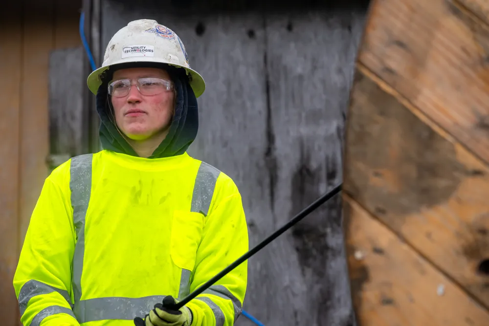
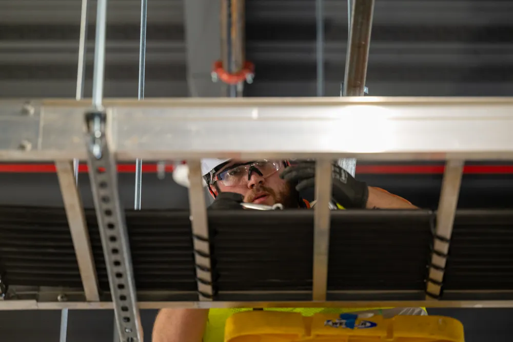

Careers
Skilled work with a local employer. Get to know the trades and the questions to ask, then search the roles open now across our operating companies.
Popular: Fiber splicingLocatingDirectional drillingCDL drivingTrainee roles
Where do I fit?
Not sure what the job titles mean? Start with the work. Each trade explains itself and shows the roles open now.
Join and test optical fibers so a route carries signal end to end.
208open roles UndergroundPlace conduit and cable below grade, then restore the site.
213open roles Directional drillingBore under roads and yards to place conduit without open trenches.
109open roles Aerial lineworkPlace and maintain cable on poles and strand.
106open roles LocatingFind and mark buried utilities before anyone digs.
105open roles EngineeringSurvey routes and produce the drawings and permits crews build from.
105open roles CDL drivingMove reels, equipment and materials between yards and sites.
104open roles CorporateSupport the operating companies from the Dycom office: finance, people, safety, fleet and technology.
12open rolesLife at Dycom
The people who do the work, in their own words.


Benefits
What you can expect from your operating company, from your first day.
Why Dycom
You are hired by a local company with its own name and people, backed by one of the largest specialty contractors in the country.
A local employer
Your company knows its territory, its customers and its crews, and you work close to home.
Trained on the job
Headway® training and mentoring from experienced crew members, from your first day.
Room to grow
Move between trades and crews as your skills grow, across a national family of companies.
Apply safely
Recruitment scams use real company names. Here is how to know an offer is really from us.
Dycom companies will never
- Ask you to pay to apply, to train or to be hired
- Ask for bank details, ID documents or passwords before an offer
- Interview or offer you a job only by text message or chat app

Not ready to apply?
Join our talent network. Tell us the work and the area you are interested in, and we will let you know when a role opens.